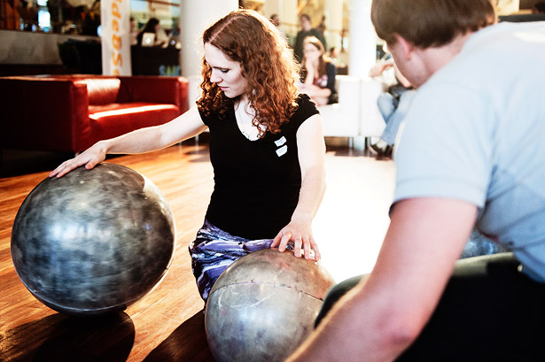
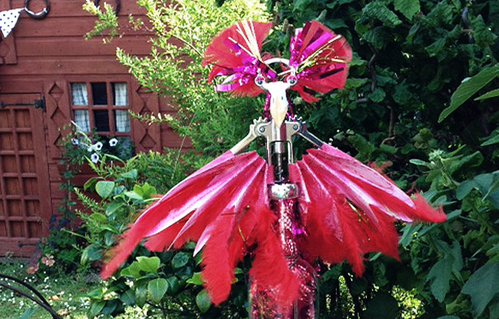
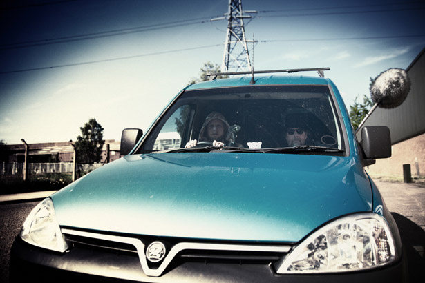

If Wet #4 will soon be upon us – Sunday 21st July, 2-4pm.
Note: this is a week earlier than normal, as Sam is performing at FON the following weekend.
We welcome the wonderful Laura Kriefman of Guerilla Dance Project from Bristol to talk about how a dancer and choreographer started playing with sound. She will present her Rolling Stones project and some work she has been doing on building mechanical birds.

Here’s the promo video from when Laura’s Rolling Stones appeared at The Southbank Centre. Next stop, Callow End Village Hall.
Your hosts MortonUnderwood will be presenting their new release on RHP, entitled Field Augmentation. An overview of how the pieces are created will be provided, along with some demonstration pieces.

We will also have our regular Run What Ya Brung section where anyone can do a brief, informal presentation of a sonic curiosity they might own or have built. Last month we had a range of exciting stuff, including: techno clog dancing, a multi-faceted noise box synth and a selection of three-hole whistles / flutes. Please JOIN US and contribute!
We will also have the usual yummy treats of home-made food, cakes and a local ale.
We are most excited and hope to see you at Callow End Village Hall on Sunday the 21st July at 2pm!